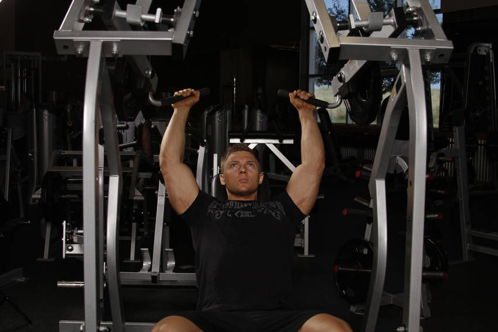

- Load an appropriate weight onto the pins and adjust the seat for your height. The handles should be near the top of the shoulders at the beginning of the motion. Your chest and head should be up and handles held with a pronated grip. This will be your starting position.
- Press the handles upward by extending through the elbow.
- After a brief pause at the top, return the weight to just above the start position, keeping tension on the muscles by not returning the weight to the stops until the set is complete.